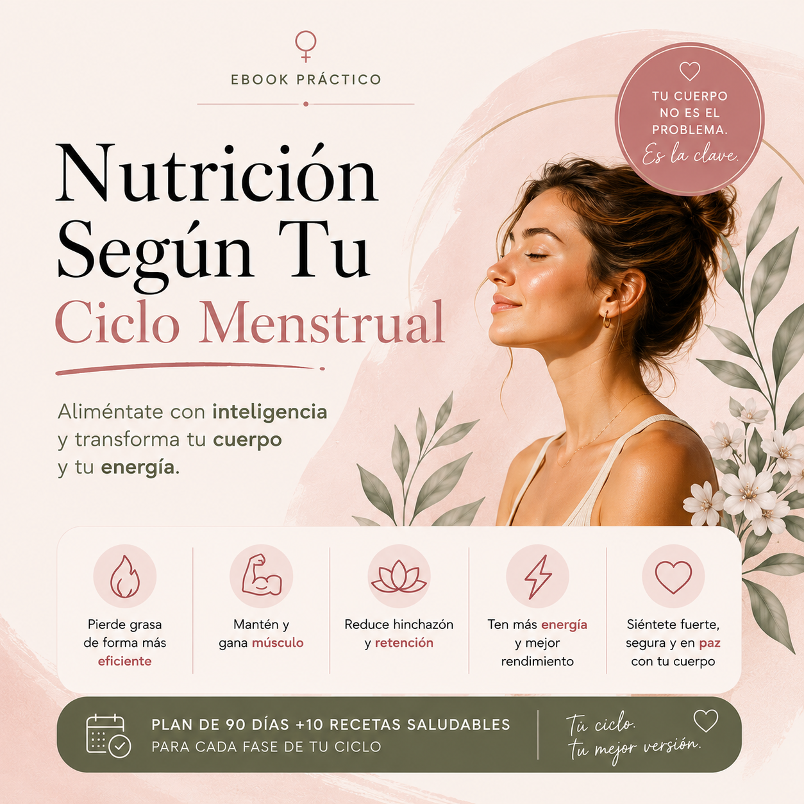

Bienvenidos a tu espacio de equilibrio y transformación
Creamos recursos digitales diseñados exclusivamente para el bienestar integral de la mujer
Olvídate de las dietas restrictivas y los entrenamientos que te agotan. Aquí aprenderás a nutrirte, entrenar y vivir de forma inteligente, respetando tu ritmo biológico y tus hormonas. Sostenible, real y diseñado para que te sientas fuerte, segura y cómoda en tu propia piel.
🌿 Basado en evidencia científica|📱 Formatos 100% digitales
Nuestras Guías y Ebooks
Herramientas prácticas de descarga inmediata para empezar tu cambio hoy mismo.

Nutrición Según Tu Ciclo Menstrual
Aprende a sincronizar tu alimentación con tus hormonas. Incluye el plan completo de 90 días para optimizar tu energía y perder grasa de forma inteligente.
No eres una máquina lineal, eres cíclica. Así funciona tu biología:
Fase Folicular y Ovulatoria
El momento de máxima potencia
Durante estas fases, tus estrógenos están al máximo. Tu cuerpo tolera de forma excelente los carbohidratos complejos y está genéticamente predispuesto a construir masa muscular y quemar grasa de manera eficiente. Es el momento perfecto para entrenar pesado.
Fase Lútea y Menstrual
Nutrición reconfortante y control de la inflamación
Cuando la progesterona sube, el cuerpo pide más calorías y aparecen los antojos. No es falta de fuerza de voluntad, es biología. Aportar grasas saludables, magnesio (como el cacao puro) y alimentos antiinflamatorios reduce drásticamente la hinchazón y el malestar.